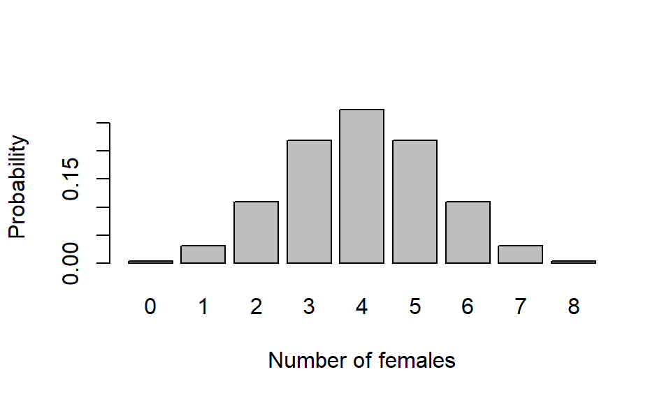
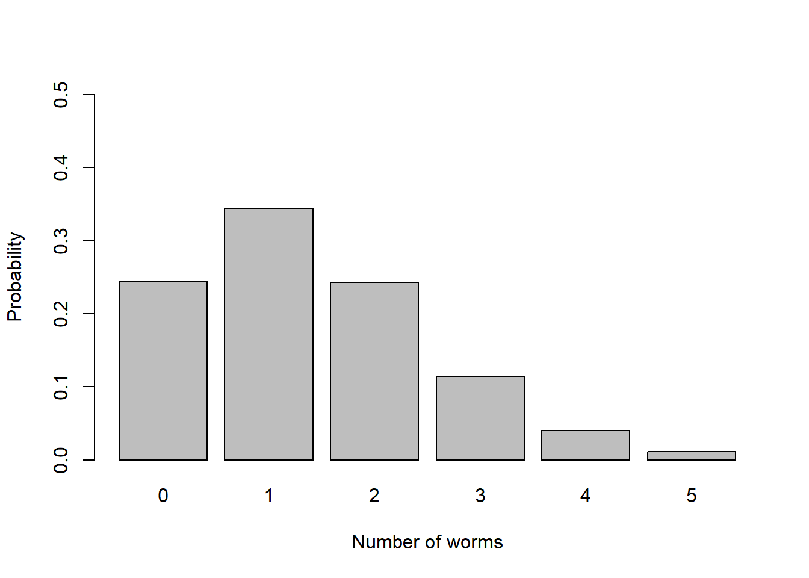

Practical 2 Binomial & Poisson distributions
The role of statisticians is often to determine the probability of events, or a series of events, occurring in nature given our current understanding of the processes that are involved (normally on the basis of previous data). This requires a mathematical description of a theoretical relationship. We refer to this as a statistical model. Statistical models are like any model (e.g. a model aeroplane) in that they can be a useful simplification of reality. However, as George Box said, ‘all models are wrong but some are useful’. We will come back to this concept again and again throughout this course.
Two models, the binomial and Poisson distributions, often provide excellent approximations of real-world events. This means that they can be used to determine the likelihood of events or series of events given certain ‘reasonable’ assumptions. In terms of planning, e.g. in the insurance industry, this is extremely useful.
Examples of the questions addressed using the binomial and Poisson models include:
- How likely is it that four hurricanes hit the US in a single season based on historic data?
- How likely is it that a ‘50-year’ wave will hit in the next ten years? A 50 year wave is one of such size that it only occurs, on average, once in 50 years.
- Is a river flooding now more than it used to? Is there a change in flooding frequency?
- What proportion of clutches of fish eggs will contain all males?
This practical gives you the opportunity to practice using these distributions by hand and to use R to check that you get the answers correct. In the first part of this class you will conduct a number of short exercises to familiarise yourselves with the necessary commands in R to study probability using the binomial and Poisson distributions.
2.1 The Binomial distribution
2.1.1 Bernoulli trials
A Bernoulli trial is a single event with a binary outcome (i.e., a success or a failure). Binary outcomes include:
- Alive / dead
- Male / female
- Pregnant / not pregnant
- Guilty/ not guilty
- Heads/tails
- Win/lose
Things that can have more than two outcomes can be re-coded into two categories. This concept can be extended to numerous situations, such as:
- Income greater than £100,000 vs. less than £100,000
- Flower colour (blue vs. not blue; red vs. not red)
Each Bernoulli trial, by definition, is independent of all previous trials.
Q28. If you tossed a fair coin 99 times and each time it landed heads (and you weren’t cheating), what is the probability of obtaining a head on the next toss of the coin?
This is a different question from asking whether 100 heads or (99 heads + 1 tails) is more likely in a throw of 100 coins. This is different because these events are independent.
2.1.2 The binomial distribution
The binomial distribution is a discrete probability distribution that applies to a series of Bernoulli trials. For example, if you had 10 eggs under a (big) chicken and they were all female, you might wonder how likely this was by chance. If this kept happening, you might question whether something was somehow making the eggs female. Here, the outcome can be female or male, and the trial size is 10 (each egg is a ‘trial’ with a binary outcome). You may question the assumption that the ratio female to male was 50:50 and favour an alternative hypothesis that the ratio was more female: less male. The binomial distribution allows you to quantify the probability of getting 10 females from 10 eggs (or any other number of females) for any given probability \(P(female)\). That is, we are not restricted to 50:50.
You need to know two things to use the binomial distribution. These are:
- the number of trials (\(n\), or sometimes \(k\))
- probability of success (\(p\))
From p, we can calculate the probability of failure as \(q = (1-p)\), since the two probabilities must sum to 1.
The distribution of a binomially distributed variable \(y\) is specified \(y \sim Binom(n,p)\). We denote \(P(x)\) as the probability of getting \(x\) successes where \(x\) is an integer \(0:n\).
The mean of a binomial distribution is \(n*p\). This gives you the expected outcome. For example, if \(P(female)=0.5\) and \(n=10\) eggs the expected number of females is \(10*0.5=5\).
2.1.3 Binomial distributions by hand
Wongles always lay two eggs in a clutch but 50% of the eggs are infertile and don’t hatch. We are interested in the proportions that we can expect to hatch from one clutch (two eggs)
Q29. What is the event here?
Q30. What is the probability of success?
Q31. What is the number of trials?
Q32. How many possible outcomes are there and what are they?
Q33. Write down the model specification in the standard notation (with parameters)
Q34. Calculate the expected proportions of clutches of eggs that contain two fertile, two infertile and one of each using the quadratic equation approach (i.e. expand \((p+q)^2\)).
Often we are faced more than two events and the quadratic expansion approach you used above is no longer convenient. In such circumstances you use the binomial expression.
Q35. Copy down the binomial probability mass function (from Chapter 7) and use it as an alternative method for calculating the fertility proportions for two eggs (as per the quadratic equation approach).
Oozle birds are much more sensible than Wongles and always have broods of eight offspring and all of them hatch. We are interested in modelling the probabilities of the proportion of male and female offspring in broods of eight eggs.
Q36. What is the Bernoulli event here (you are looking for something which has two mutually exclusive outcomes)?
Q37. What are the theoretical limits to your outcomes (i.e, max numbers of each).
Q38. What are the possible outcomes, and what is the total number of possible outcomes?
Q39. Write down, in the standard manner, the model for Oozle egg gender (starting with \(y \sim Binom(n,p)\)).
We will assume that the probability (\(p\)) of any offspring being female is 0.5 and being male (\(q\)) is 0.5. For the extreme cases where all offspring are one sex, we can use simple probability theory: the probability of getting \(n\) females in a brood of size \(n\) is equal to \(p^n\).
Q40. Calculate the probability of obtaining eight male offspring.
Q41. What is the mean number of females you would expect in Oozle broods?
It gets more complicated when you want to know the probability of getting, say, 1 male and 7 females from your clutch of eight eggs.
Q42. Given that \(p=q\), what shape would expect the distribution to be?
Q43. Use the Binomial expression (by hand) to calculate the probability of obtaining 0, 1, 2, 3, 4, 5, 6, 7 and 8 male offspring (note that the distribution is symmetrical).
It is much easier, of course, to do this using R.
2.1.4 Binomial distributions in R
You can get probabilities for specific outcomes from a massive array of theoretical probability distributions from R. The binomial is just one of them and is implemented here.
num_female <- 4 # note that 4 is assigned to the variable called num_female
num_trials <- 8
p_female <- 0.5
# for a single probability: y~Binom(n=8, p=0.5) determine P(y_i=4)
paste0("P(", num_female, " female | ", num_trials, " eggs) = ",
dbinom(num_female, num_trials, p_female))## [1] "P(4 female | 8 eggs) = 0.2734375"dbinom(4, 8, 0.5)Often we want to know cumulative probabilities. This allows us to answer the question, for example, of what is the probability of obtaining < 4 females in a brood of 8 eggs. Here, <4 equates to the cumulative probability P(0) + P(1) + P(2) + P(3).
# pbinom gives the cumulative probability
paste("The cumulative probability is",
max(pbinom(0:num_female - 1, num_trials, p_female)))## [1] "The cumulative probability is 0.36328125"Q44. Why do we parameterise pbinom() with num_female-1 rather than num_female?
Q45. Would this change if the question was \(P( \leq 4)\)?
Q46. Take the ’max’out of the above line and run again. You should see 5 cumulative probabilities. Why is the first cumulative probability zero?
Q47. Calculate P(< 4 females | 8 eggs) using dbinom() instead of pbinom().
# You can check what R is doing by running parts of code:
0:num_female - 1 # is this what you expected?## [1] -1 0 1 2 30:(num_female - 1) # this is actually what we want.## [1] 0 1 2 3# Correct the code above. Why did this bug have no effect?Q48. What is the probability of getting 3 females?
Q49. What is the probability of getting 8 females?
Q50. What cumulative probabilities would you need to consider to answer the question ‘What is the probability of getting fewer than three females?’
Q51. Write down the model that describes this random process (number of females per eight eggs). Your answer should be like this: \(y \sim Binom(n, p)\).
Q52. What is the probability of getting < 4 females?
Q53. What is the probability of getting \(\leq\) 4 females?
Q54. What is the probability of getting > than 8 females?
Q55. What is the probability of getting \(\geq\) than 2 females?
Let’s visualise these distributions in order to better understand them.
# Run this, then explore values of p_female
# Note: 'success' and 'failure' is arbitrary. Just make sure you're calculating
# what you think. How would you calculate the probabilities for males instead?
num_female <- seq(0, 8)
p_female <- 0.5 # what are the limits of p_female?
prFemale_df <- data.frame(num_female = num_female,
prob = dbinom(num_female, max(num_female), p_female))
prFemale_df ## num_female prob
## 1 0 0.00390625
## 2 1 0.03125000
## 3 2 0.10937500
## 4 3 0.21875000
## 5 4 0.27343750
## 6 5 0.21875000
## 7 6 0.10937500
## 8 7 0.03125000
## 9 8 0.00390625barplot(prFemale_df$prob, names = prFemale_df$num_female,
xlab = "Number of females", ylab = "Probability")
prFemale_df$cumul_prob <- cumsum(prFemale_df$prob)
barplot(prFemale_df$cumul_prob, names = prFemale_df$num_female,
xlab = "Enter the correct label!", ylab = "Enter the correct label!")
Try re-plotting so that the two panels appear side by side (hint: par(mfrow=c(...))).
Note \(P(y_i=x)\) is read as ‘the probability that a random observation \(y_i\) equals \(x\)’. Sometimes this includes conditions: \(P(y_i=x|n,p)\), which is read as the probability that \(y_i\) equals \(x\) given \(n\) and \(p\). You may instead see \(P()\), \(Pr()\), \(p()\), or \(Prob()\). The interpretation of \(P(y_i=8\ |\ n=8,\ p=0.5)\) is that the probability of 8 female offspring is 0.00391. So, if we have 500 broods, each with 8 eggs, we expect \(500 * 0.00391 = 1.95 \approx 2\) broods to be all female.
Q56. Why is a bargraph the appropriate plot here?
Q57. What do you notice about the shape of the distribution when \(p=q=0.5\)?
Q58. Re-run the analysis with the probability of female as 0.8. Plot the results.
Q59. What is the shape of the distribution now?
2.2 The Poisson distribution
The Poisson distribution is another probability distribution that describes discrete events that occur in space and/or time. The Poisson distribution is used to model (predict) the distribution of events that are rare, random, and independent. This can include events like earthquakes, storms, or the number of bends arriving at the SAMS recompression facility.
The Poisson distribution takes a single parameter: the mean. If a variable is Poisson distributed, its variance will equal its mean. This is a diagnostic feature of the distribution. The Poisson distribution is a discrete probability distribution, but its parameter, the mean, is continuous (similar to continuous \(p\) for the discrete binomial distribution).
The Poisson formula is simple - copy it from Chapter 7 into here: \(\bar{y}\) is the mean, \(x\) is the outcome of interest, \(e\) is Euler’s number, and \(!\) is factorial.
2.2.1 Poisson distributions by hand
These problems usually start by asking you to calculate the mean number of observations made per unit of space or time. This is the Poisson parameter, and is referred to as the rate or as lambda (\(\lambda\)). The unit could be spatial (e.g., per \(m^2\)) or temporal (e.g., per hour or day).
Consider randomly throwing 1\(m^2\) quadrat- on a sandy beach covered in worm casts, as illustrated in Fig. ??. You then count the number of casts in each quadrat.
From these data you can calculate the mean number of observations per unit.
The code below generates a dataframe from which you can determine that the mean number of worms per quadrat is 1.41. We wish to predict the proportion of quadrats that would contain 0, 1, 2, 3, 4, and 5 worms, assuming that the worms are independently distributed across space (i.e., random: one worm’s location has no effect on another worm’s location, and there is no relevant environmental variation).
We thus wish to determine the probability of observing our data assuming that the worms casts are randomly distributed. To do this, we need to know the probability of observing each count (zero to infinity), given the mean count per quadrat.
# num_worms is the number of worms per quadrat
# num_quadrats is numbers of quadrats observed containing that number of worms
# this dataset is summarised. Raw data might have columns: quadrat_id, num_worms
worm_df <- data.frame(num_worms = c(0, 1, 2, 3, 4, 5, 6),
num_quadrats = c(35, 28, 15, 10, 7, 5, 0))
worm_df # display dataframe## num_worms num_quadrats
## 1 0 35
## 2 1 28
## 3 2 15
## 4 3 10
## 5 4 7
## 6 5 5
## 7 6 0As the number of worms per quadrat is low compared to the number of worms that could exist within a quadrat we consider these are rare events and hence can be (reasonably) described by a Poisson distribution (assuming they are independent).
From just the mean we are able to calculate the expected frequency of observing different number of worms in any quadrat (assuming the model assumptions are met - remind yourself what these assumptions are). The number of worms per quadrat (\(y\)) is discrete; it can only take integers greater or equal to zero.
Probability questions often includes terms such as \(P(y_i \leq a)\). That is, the probability that an observation \(i\) of the random variable \(y\) is less than or equal to \(a\). For example, in this context you might get asked for \(P(y_i \leq 1)\) which asks what is the probability of a random quadrat being thrown (\(y_i\)) containing less or equal to 1 worm cast (\(a\), an integer value). To be fully complete, we might even write \(P(y_i \leq 1 | \lambda)\), which acknowledges that we know the (sample) mean.
So, if you are interested in predicting the probability of obtaining 1 or fewer worms per quadrat, you would start your calculation by writing \(P(y_i = 0) + P(y_i=1) = \dots\).
Q60. Use the Poisson formula to calculate the expected frequency of 0, 1 & 2 worms per quadrat.
Q61. What calculation would you need to conduct to determine \(P(y_i \geq 1)\)?
Again, calculating Poisson distributed variables in R is easier than doing it by hand, but you must be sure of what you are actually asking (hence bothering with the hand calculations).
2.2.2 Poisson distributions in R
You can determine the expected probabilities for each worm count per quadrat once you have determined the mean count of worms per quadrat. Since we have a summarised dataset (i.e., the number of observations num_quadrats for each number of worms num_worms, rather than the raw data with a row for each quadrat), we need to do some basic calculations. The mean number of worms per quadrat = (total number of worms) / (total number of quadrats).
sum(worm_df$num_quadrats) # total number of quadrats## [1] 100lambda_worms <- with(worm_df, sum(num_worms * num_quadrats) / sum(num_quadrats))
paste("The mean is", lambda_worms, "worms per quadrat")## [1] "The mean is 1.41 worms per quadrat"Interpreting typical questions: taking \(P(y_i \leq a)\), when \(a=5\) and you are asked to determine \(P(y_i \leq 5)\), what you are being asked is “What is the probability of a random quadrat (\(y_i\)) containing five or fewer worms?”. In order to determine this, you need to know the mean number per quadrat. When the mean number is 1.41 worms per quadrat, \(P(y_i \leq 5) = 0.997\) (3 sf). This means that, if your data are Poisson distributed, it is highly likely that there will be fewer than five worms in your quadrat if \(\lambda = 1.41\).
Q62. If the mean number of worms was 3 per quadrat, would you be more or less likely to get five worms in your quadrat?
Needless to say, you can use R to calculate Poisson probabilities. Starting with a simple example:
# ?dpois
# for questions like 'determine P(y_i=a | lambda)'
a <- 5
lambda <- 1.41
dpois(a, lambda) # probability of observing 'a' worms per quadrat: dpois()## [1] 0.01133859ppois(a, lambda) # probability of observing >= 'a' worms: ppois()## [1] 0.9966869## ppois(0:a, lambda) # what does 0:a mean? What's another way to do this?
signif(ppois(0:a, lambda), 3) # round with ?signif## [1] 0.244 0.588 0.831 0.945 0.985 0.997barplot(dpois(0:a, lambda),
ylab = "Probability", xlab = "Number of worms",
space = 0.2, ylim = c(0, 0.5), names.arg = 0:a)
Now change the plot so that the cumulative probabilities are plotted. You will need to change the code to use ppois() instead of dpois(), as well as the y-axis limits (ylim).
# create new columns in worm_df for the probabilities
worm_df$prob <- dpois(worm_df$num_worms, lambda)
worm_df$cumul_prob <- cumsum(worm_df$prob)# Make Table 2.1. Use packageName::function() instead of loading with library()
knitr::kable(worm_df, digits=5,
caption = 'Worm cast observations and expected probabilities.') | num_worms | num_quadrats | prob | cumul_prob |
|---|---|---|---|
| 0 | 35 | 0.24414 | 0.24414 |
| 1 | 28 | 0.34424 | 0.58839 |
| 2 | 15 | 0.24269 | 0.83108 |
| 3 | 10 | 0.11406 | 0.94514 |
| 4 | 7 | 0.04021 | 0.98535 |
| 5 | 5 | 0.01134 | 0.99669 |
| 6 | 0 | 0.00266 | 0.99935 |
Q64. Format the probabilities in the table to 3 significant figures.
If individual probability values (not cumulative probability) are multiplied by the total number of quadrats thrown (100), we generate the expected frequency distribution for comparison with the observed results above.
Q65. Write the appropriate code to add a column(called num_quadrats_expected) to ‘worm_df’ that is the expected number of quadrats (given that 100 quadrats was the total thrown).
This expected number is the number of quadrats that you would expect to contain 0,1,…,5 worms, given that the mean density of worms is 1.41. The number of worms per quadrat is a discrete variable, yet you can have non-integer ‘expectations’ (i.e. means).
Q66. Add another column that is the difference in the Expected number of quadrats and num_quadrats_expected.
Q67. Produce a bar graph of this difference.
2.3 The Poisson approximation of the binomial model
Where the number of trials is large and the probability of success is small, the Poisson distribution can be used as an approximation of the binomial distribution. Under these circumstances you can calculate the mean of a variable that has a binomial distribution (number of trials x probability of success; \(n*p\)) and use that as an estimate of \(\lambda\) in the Poisson model. The reason why you may wish to do this is because the Poisson model is much easier to use than the binomial model when \(n\) is large.
There are several rules of thumb that apply here. Some say that when \(p<0.1\), the Poisson approximation may be preferable to the binomial, other texts state that \(n\) should be > 50 and \(p<0.05\) (so \(n * p = \lambda = 2.5\)) whilst others state \(n>100\) and \(n*p<10\). The point is that as \(n\) increases and \(p\) decreases, the approximation gets better.
There are an infinite number of ways of multiplying two numbers together to get 5. Call our numbers \(p\) and \(k\). For example, when \(p=0.5\), \(n=10\) OR when \(p=0.05\), \(n=100\), \(n*p=5\). We can use this to illustrate the Poisson approximation of the binomial distribution.
# generate dataframe with probability for 0:16 'successes' from different
# distributions but where mean is 5.
# note that in y ~ Binom(10,0.5), probability of >10 successes is zero.
# We're going to leverage the power of the tidyverse here
library(tidyverse)
y_seq <- 0:16
binom_df <- tibble(y=rep(y_seq, times=3), # ?rep
n=rep(c(10, 20, 100), each=length(y_seq)),
p=rep(c(0.5, 0.25, 0.05), each=length(y_seq))) |>
mutate(mean=n*p,
prob=dbinom(y_seq, n, p),
label=paste0("y ~ Binom(", n, ", ", p, ")"))
pois_df <- tibble(y=y_seq,
n=NA,
p=NA,
mean=5) |>
mutate(prob=dpois(y_seq, mean),
label=paste0("y ~ Pois(", mean, ")"))
PDF_df <- bind_rows(binom_df, pois_df) |>
mutate(label=factor(label, levels=unique(label)))head(binom_df, 2)## # A tibble: 2 × 6
## y n p mean prob label
## <int> <dbl> <dbl> <dbl> <dbl> <chr>
## 1 0 10 0.5 5 0.000977 y ~ Binom(10, 0.5)
## 2 1 10 0.5 5 0.00977 y ~ Binom(10, 0.5)head(pois_df, 2)## # A tibble: 2 × 6
## y n p mean prob label
## <int> <lgl> <lgl> <dbl> <dbl> <chr>
## 1 0 NA NA 5 0.00674 y ~ Pois(5)
## 2 1 NA NA 5 0.0337 y ~ Pois(5)ggplot(PDF_df, aes(y, prob, fill=label)) + # ggplot(data, aes(xVar, yVar))
geom_bar(stat="identity", position="dodge", colour="grey30") + # ?geom_bar
scale_fill_brewer("Distribution", palette="Purples") + # from colorbrewer2.org
labs(x="Number of successes with mean = 5", y="Probability") +
theme_classic() + theme(legend.position=c(0.85, 0.85))Figure 2.1: Binomial and Poisson distributions converge with larger numbers of events.
Q68. What is the modal value in these distributions?
Generate some random numbers from the distributions in Fig 2.1 and calculate their mean and variance. Here is \(y \sim Pois(5)\):
y <- rpois(10000, 5)
paste0("Mean: ", signif(mean(y), 3), ", variance: ", signif(var(y), 3))## [1] "Mean: 5.02, variance: 5.02"Q69. What do you notice about the mean and variance in the Poisson model?
Q70. What do you notice about the mean and variance in the binomial models as \(n\) increases and \(p\) decreases? When is it more similar to the Poisson? Is this what you expected?
2.4 Conclusions
The binomial distribution is a discrete probability distribution that models situations where the outcome of an observation or experiment is binary (i.e., two possibilities) or can be coded as such. The binomial model enables us to predict the probability of making our observation or series of independent observations for any given probability of a success (\(p\)). This enables us to quantify how likely our observation is to have occurred, by chance. If the chance of our observation is very low, we can challenge the hypothesis with regard the probability of success (\(p\)) and suggest a different value.
The Poisson distribution is another discrete probability distribution that is used to predict the chance occurrence of observations that are rare, independent and randomly distributed with mean = variance = \(\lambda\). The Poisson distribution can be used as an approximation of the binomial distribution where the number of trials (\(n\)) is large and the probability of success (\(p\)) is small. This approximation is useful as, unlike the Poisson distribution, the binomial calculation requires the handling of massive numbers (from large factorials).